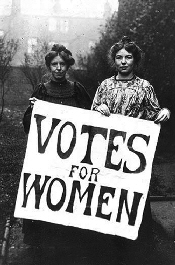

Me encanta hablar con mujeres de poder. Y no me refiero precisamente a esas que tienen el tipo de poder para arruinarlo todo sino a las que poseen el control de sus vidas. Las encuentro en todos los medios y clases sociales, sobresalen entre la generalidad ya que han logrado escapar (o continúan intentándolo) de las diferentes variedades de esclavitudes posibles en estos días; sin embargo, me he dado cuenta de que, tristemente, una gran cantidad de mujeres con una gama de opciones inimaginables hace cincuenta años, no sabe lo que realmente fue, ha sido y es el feminismo. Y lo importante que será si deseamos un futuro saludable.
Es triste y peligroso eso de olvidar el pasado. Los pueblos que lo hacen repiten errores, se olvidan de las pasiones que los impulsaron a derramar la sangre de los inocentes y sucumben ante ellas una y otra vez. Lo mismo ocurre con nuestras vidas, es imposible saber quiénes somos si olvidamos lo que hemos sido (un dramático ejemplo en una columna anterior) y, como bien lo observa Patricia Lynn Reilly en su libro Un dios que se parezca a mí, “nuestras propias biografías son moldeadas y dirigidas por nuestra historia, nuestra cultura y los tabúes del mundo en el que vivimos. Es imposible extraer nuestro relato personal de esa historia más amplia que es la vida de todas las mujeres”.
Sin embargo, una vez quemados y eliminados los brasieres de los pechos femeninos en países desarrollados, una vez abiertas nuevas opciones para las transportadoras de las dos equis, un nuevo muro comenzó a erigirse pues, como siempre, el cambio tiene su precio y no toda la especie estaba de acuerdo con el rumbo tomado; había que apretar ciertas tuercas, cerrar puertas y afear, tantas veces literalmente, el movimiento. Todo lo que pone en peligro lo establecido será siempre obstruido, nuestra especie es así de obtusa. Todavía, por cada paso que cualquier hombre o mujer tome hacia la liberación suya, de su familia o de su pueblo, políticos y religiosos por igual tomarán dos pasos más en su contra, parece ser el juego humano por excelencia.
“El feminismo incita a la mujer a abandonar a su esposo, matar a sus niños, practicar brujería, destruir el capitalismo y convertirse en lesbianas”. Comentarios como éste, de los labios del ahora vapuleado pastor Pat Robertson, ejemplifican este afeamiento. Y añado, que aparte de matar niños, no veo nada malo en que una mujer abandone a un esposo abusivo, destruya al capitalismo antes de que éste acabe con ella o reafirme su lesbianismo si así lo desea. De hecho, me importa un bledo si lo suyo es practicar brujería ya que no creo que tenga efecto alguno en el orden natural de las cosas aparte de promover, en distintos grados, a las odiosas pseudociencias y las tonterías en general.
Cada vez más noto una actitud antifeminista (muy diferente a la machista) basada en la desinformación y el desconocimiento. El otro día, por ejemplo, corregía para una revista una entrevista a una cantante que hasta ese momento desconocía, las palabras de la joven reflejaban no sólo su desconocimiento sobre la historia del sufragio femenino sino también sobre el estado vigente de millones de mujeres sobre este febril planeta. La artista aseguraba no ser feminista aunque juraba creer firmemente en “la igualdad entre el hombre y la mujer”. La percibí atascada en esa perniciosa idea que describe a las feministas como mujeres feas y descuidadas que odian a los hombres; era de ese estereotipo del que la cantante parecía huir y renegar.

Pero la realidad es otra. Los hombres y las mujeres somos distintos, es un hecho biológico establecido. Las disimilitudes abarcan desde los químicos que bañan nuestros anatómicamente diferentes organismos hasta la estructura cerebral y las funciones para las que evolucionamos. Lo que se busca es lo justo, la igualdad de condiciones hacia los seres humanos en general y la erradicación de la represión; que no es lo mismo que la legendaria y equivocada propaganda de la igualdad entre los sexos. Una verdadera feminista luchará por el derecho de cualquier mujer a quedarse en casa a criar sus hijos si eso la hace feliz a ella y a su compañero, siempre y cuando, tanto la niña como el niño puedan contemplar juntos el deseo de algún día convertirse en astronautas o en futuros Marilyn Manson. Es cuestión de opciones, de poder elegir. A lo mejor estos ejemplos suenen arcaicos a los oídos de la chica moderna acostumbrada a ver mujeres en la Estación Espacial Internacional y es precisamente por eso que no debemos olvidar el pasado pues en cualquier pestañeo lento te arrebatan todos tus derechos otra vez, está ocurriendo ahora mismo aquí en mi país. Ahora bien, es siempre recomendable mantener una saludable visión escéptica sobre el propio feminismo pues, como bien señaló Bertrand Russell, “todos los movimientos llegan demasiado lejos”.
Aún así, es gracias al feminismo que la joven antifeminista tiene una carrera como cantante, lleva la ropa que le venga en gana y escupe disparates para la prensa. Gracias al resultado del sufragio feminista, yo puedo publicar estas columnas y firmarlas con mi nombre real. Como una vez argumentó la autora británica Virginia Woolf, es posible que “durante la mayor parte de la historia, Anónimo haya sido mujer”. Peor aún, si hubiese nacido en otro hemisferio me fuera imposible publicar estas “lupas” sin meterme en problemas y, en ese sentido, el ataque a los dioses me haría un blanco sin importar las formas de mis cromosomas sexuales. En la represión de libertades debemos entender, como bien lo expresó la feminista estadounidense Betty Friedman, que “el hombre no es el enemigo, es más bien otra víctima”. Es precisamente una de las causas por las que se celebra cada 30 de septiembre un día para blasfemar: la conmemoración a nuestro derecho de expresarnos y criticar cualquier idea. Y yo añado, sin que importe el sexo del cerebro que las piense, (tanto las ideas criticables como las blasfemias contra ellas).
Por eso el feminismo es en mi opinión sinónimo de libertad. Este movimiento estableció una serie de opciones que permitió una vida distinta para mí. Nunca temí por mi independencia intelectual; no sé lo que es acatar arbitrarias órdenes sexistas ni que silencien mis palabras sólo por ser hembra; no tengo la menor idea cómo se siente vivir debajo de una burka, carente de identidad y considerada un ser tan completamente inferior que no tiene derecho ni siquiera a mostrar quien es.
No obstante, conozco sobre otras esclavitudes. El Occidente no está exento de ellas, de hecho, es parte de ese muro erigido sobre bloques de desinformación, la manera en que el Homo sapiens se niega a crecer y, en su perenne egoísmo, pretende mantenernos a todos en el infierno de la ignorancia con el propósito de beneficiarse de nuestra “voluntaria” sumisión. “En nuestros tiempos, la identidad de la mujer ha sido vinculada a su belleza, de esta forma permanecemos vulnerables a la aprobación externa, acarreando nuestro sensible y vital órgano de la autoestima expuesto al aire”, escribió Naomi Wolf en su libro El mito de la belleza.
Estos distintos tipos de esclavitudes que vive la mujer moderna sin problemas económicos disminuirían significativamente con más educación y menos televisión. Actualmente, la lectura sigue siendo subestimada mientras las niñas fomentan sus ideas siguiendo certámenes de belleza, chismes faranduleros, series carentes de contenido erudito y programas tipo “reality” que fomentan actitudes caóticas y superficiales. Pero los procesos de transformación siempre toman su tiempo y debemos tener paciencia, aunque a veces parezca que nunca avistaremos el otro lado de este laberíntico túnel. Hace sólo unos días, un ateo que conozco comentó, ante personas que criticábamos otro de esos horrendos homicidios-suicidios pasionales, que “a ninguna mujer que la encuentren planchando la han asesinado”. Esta afirmación, viniendo de una persona que se jacta de tener el racionalismo como bandera, es doblemente decepcionante, su patético comentario promueve la ilógica visión de que un ser humano es un objeto que otro puede poseer a tal grado como para disponer de su vida. Un hecho repugnante, para nada racional y que expone esa doble cara social que todavía condona la traición y la agresividad masculina mientras condena cualquier asomo de liberación por parte de la mujer.
Deplorablemente, estas afirmaciones se extienden hacia el dios con el que me crié. Pensé por mucho tiempo que, ya que esa divinidad no era mamá y aparentemente carecía de una, por lo menos tendría que haber sido feminista y apoyar la causa. Él mismo, a pesar de su sobrevalorada omnipotencia, necesitó de una mujer que pariese a su único hijo, ¿por qué ese empeño en subyugarla después?, ¿por qué ese afán de negarle protagonismo en la historia?
Sospecho que toda una sociedad machista está detrás de ello. Y aunque no pienso que el feminismo lleve a la no creencia, el machismo en las religiones es responsable activamente de gran parte del maltrato, el abuso y las injusticias que se cometen contra el género femenino todos los días. No han sido pocas las feministas creyentes que han intentado resolver este dilema, culpando desde una mala traducción de los escritos hasta equivocadas interpretaciones de controvertidos párrafos como el de los Efesios 5:21 o, sencillamente, prefieren explicar que su libro sagrado fue escrito en otros tiempos pero que las cosas son distintas ahora.
Yo exigiría más sabiduría de mis dioses, y si existieran, la palabra feminismo jamás hubiese sido necesaria.
Pero en defensa de los hombres y mujeres que lucharon por más posibilidades en la vida de cualquier ciudadano, sin importar su sexo, cito un adagio popular que dice que el feminismo “es esa noción radical de que las mujeres también son personas”. El que no concuerde con esa sarcástica afirmación no vale ni un nano asomo sináptico entre mis neuronas.
Las sociedades necesitan de una religión liberadora
Sin exclusiones ni pueblos elegidos

En una sociedad donde las herramientas básicas se actualizan constantemente, es imposible continuar subsistiendo con las mismas doctrinas, debemos adaptarlas, hacerlas inclusivas y así desacelerar un poco el problema de segregación tribal desatado por estos clubes de reinos sobrenaturales. Necesitamos un meme religioso que reconozca y valore lo positivo de cada uno de los elementos en una familia, sin que importe el sexo ni la orientación sexual; una religión que no permita la exclusión de personas diferentes. El otro día estuve en una boda evangélica donde escuché críticas de algunos católicos presentes habituados a otros ritos y ceremonias. Días después lo comenté con un amigo evangélico quien me explicó que muchos católicos estaban unidos a la santería, ya que todavía “adoran símbolos y santos y algunos hasta practican la brujería”. Para él, estas experiencias los alían al mal (se refería al Mal con mayúscula patrocinado por Lucifer), obligándolos a actuar de forma crítica en iglesias evangélicas donde la adoración a los símbolos no existe.
Diversos grados de estas diferencias interreligiosas se encuentran salpicados por toda la historia de la humanidad. Ejemplos radicales encontramos por doquier, los cristianos y musulmanes se han estado matando durante siglos; más recientemente y entre muchos otros, el conflicto irlandés entre protestantes y católicos; actualmente, los sunitas y los chiítas, predominantes en Irak pero también activos en otros países, asesinan a sus compatriotas por tener visiones distintas de la vida de un mismo profeta y los escritos del mismo libro sagrado. Por estos lugares más cercanos a mí, un cristiano militante es capaz de asesinar a otro devoto de Jesús por pensar distinto sobre la vida de un embrión o simplemente por ser homosexual o mujer.
¿Cómo es que en pleno cibersiglo XXI todavía estemos asesinando gente por desacuerdos sobre versiones distintas de libros arcaicos? Libros que contienen párrafos inadmisibles para cualquier humanista sobre pensamientos y conductas que ni siquiera puestos dentro del contexto de miles de años atrás, poseen sentido alguno.
De nuevo pienso que, por lo menos, deben ser editados. Enriquecer esta nueva religión con el espectacular conocimiento científico que poseemos hoy. Erradicar todos esos capítulos sobre la esclavitud, la matanza de niños y de pueblos enteros; anular a todos esos dioses sedientos de la sangre de animales torturados en sacrificios sin sentido; borrar todo lo que se refiera a la mujer como inferior o que aluda a la subordinación de otras razas; enmendar la creación del mundo y los animales, incluyéndonos, y entonces dejar que cada cual ponga a su dios donde mejor le plazca, sin exclusividades ni pueblos elegidos: todos vamos al cielo aunque nadie sepa cómo llegar y el del mapa sea ateo…
Ni John Lennon era tan idealista, es más fácil imaginar un mundo sin religión.
Sin embargo, existe en las personas una fuerte e intensa necesidad de creer que veo difícil de exorcizar. Una amiga lesbiana creyente, cansada de enfrentarse al absurdo ostracismo religioso en contra de la homosexualidad, ha modernizado y adaptado su credo. Su divinidad no tiene sexo ni forma, vive en un lugar más allá del Universo conocido y sólo al morir ella percibirá lo que llama “su esencia” y entonces: “lo entenderé todo”, me ha asegurado varias veces. Ella asiste, por cierto, a la Iglesia Unitaria Universalista (Unitarian Universalism) en Estados Unidos.
Mi visión, debo decir, es mucho más terrenal, creo que para entender aunque sea un poco hay que pasarse la vida estudiando; pero soy tolerante y no me importa que la gente empolle sus credos de tipo sobrenatural…es decir, mientras éstos no bloqueen el progreso ni la libertad colectiva ni el crecimiento individual de acuerdo con los acordes genéticos de cada cual. Mi propuesta se debe, precisamente, a que todavía existe ese asfixiante asedio que ajusticia las constituciones de nuestros gobiernos y afecta mi vida y la del colectivo. Cuando me dejen existir en paz y liberen con opciones a los pueblos, entonces sustituiremos en esta columna la palabra “herética” con alguna otra como “curiosa” o “investigadora”.
Volver al índice de la Lupa Herética
© 2008-2023 Glenys Álvarez y Sin Dioses. Prohibida la reproducción con fines comerciales.
Comentarios
Comments powered by Disqus